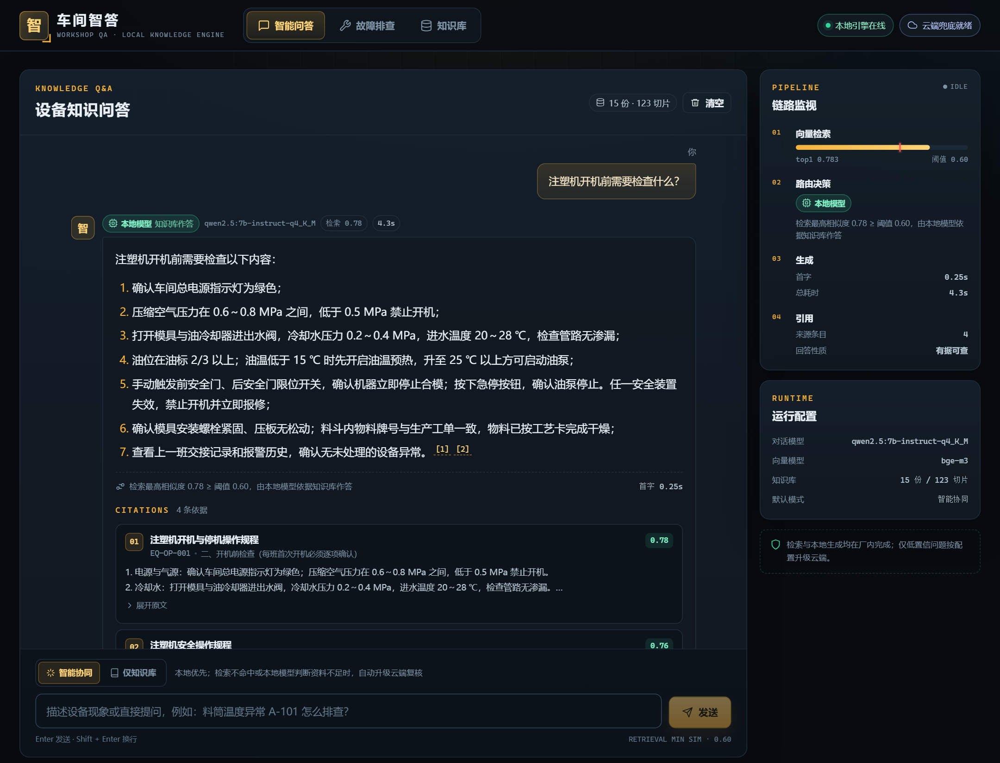
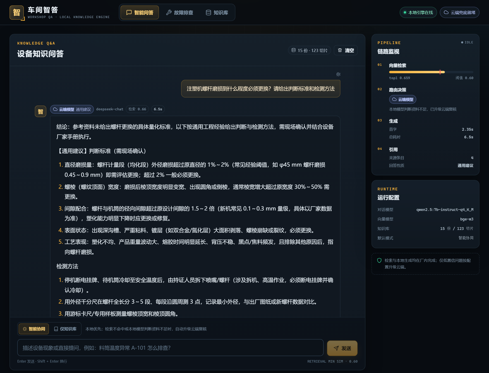
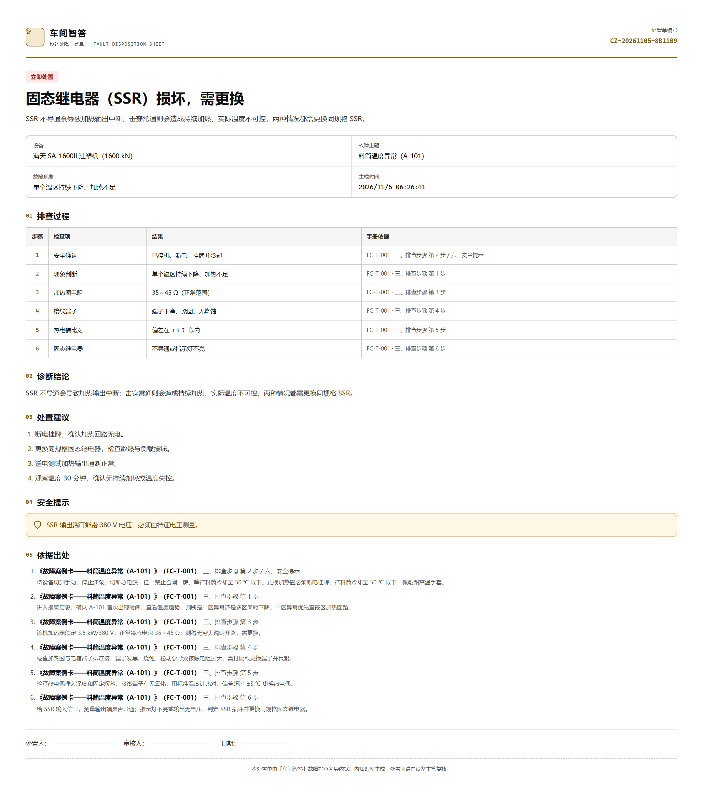
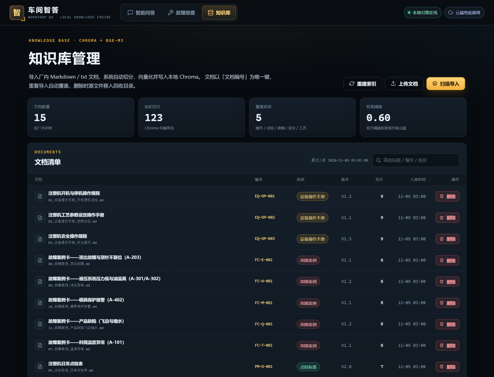

注塑车间的设备手册、点检标准、故障案例与安全规程分散在 PDF、纸质文件和老师傅经验中，新人遇到报警往往只能翻手册、问师傅，响应慢且口径不一；直接使用通用大模型又存在设备数据外泄、模型编造报警代码与参数的风险。
本作品构建了一套本地优先的检索增强生成（RAG）问答与故障排查系统。系统将厂内 Markdown 文档按标题层级与段落切分，使用 bge-m3 生成 1024 维向量并存入 Chroma；提问时检索 top-4 片段，交由本地 Qwen2.5-7B 量化模型流式生成，答案逐句标注出处，资料不足时明确拒答。针对「手册没写但问题属于注塑领域」的灰区，系统在检索分数低于 0.6 或本地模型自评资料不足时自动升级 DeepSeek，并通过 SSE route 事件让界面实时显示路径与原因。故障排查采用 12 节点、11 结论的确定性状态机，每一步引用手册原文，走完生成可打印的 A4 处置单。知识库检索同时封装为 MCP 工具，可被其他 AI 应用复用。
实测结果：15 份示例文档、123 个切片；30 条问句校准出 0.6 的拒答阈值（正向最低 0.675、负向最高 0.522）；本地问题 top-1 0.7833、首字 0.25–1.0 s；云端升级用例 top-1 0.6589，正确触发 route→cloud；无关问题 0.4242 被拒答且来源为空；诊断链路 6 步生成处置单并通过 A4 打印验证；MCP 客户端调用检索 max_score=0.8078。系统已在本地以生产态单端口跑通，公网部署脚本与文档就绪。
sources.index 同源，展示文档名、编号、章节路径与相似度。关键词：检索增强生成（RAG）；本地大模型；端云协同；故障诊断状态机；MCP；可溯源问答
注塑车间的知识形态很不「数字化」：设备操作手册是 PDF，点检标准贴在机台，故障案例掌握在老师傅手里，安全规程是纸质文件。新人遇到 A-101 温度报警，通常要经历「翻手册找章节 → 问师傅 → 在群里发消息」的过程，响应慢，而且不同人给出的判断标准不一致。
通用大模型看起来是一个直接答案，但放进工厂会碰到三条硬边界：
因此，作品的目标不是做一个「更会聊天的设备助手」，而是做一个答案有出处、拒答有依据、路径可解释、数据留在厂内的车间知识工具。
「车间智答」是面向智能制造一线的本地化 AI 知识与故障排查助手。厂内文档进入知识库后，一线人员用自然语言提问，系统在本机完成检索与生成，答案带原文出处；本地资料不足时按配置升级云端；有固定排查路径的故障走状态机向导，输出可打印的处置单。
| 用户 | 典型诉求 | 系统回应 |
|---|---|---|
| 新入职操作工 | 开机前检查什么、报警怎么处理、参数在哪里看 | 本地 RAG 问答 + 引用原文，按手册步骤回答 |
| 班组长 / 老师傅 | 快速确认判断标准，把经验沉淀成可查记录 | 知识库管理、检索测试台、处置单归档 |
| 设备工程师 | 按安全顺序排查电气/温度故障，留下处理依据 | 诊断状态机、每步手册依据、A4 处置单 |
| 安全员 | 确认回答没有跳过断电、挂牌、冷却等安全步骤 | 诊断链首节点强制安全确认；回答保留安全提示 |
| 亮点 | 具体做法 |
|---|---|
| 数据不出厂 | 检索、生成、诊断均在本机 Ollama 完成；云端只处理低置信问题，且只发送问题与必要片段 |
| 回答可溯源 | 每个片段带文档名、编号、章节路径、相似度；引用编号与 sources.index 同源生成 |
| 两层拒答 | 检索层 0.6 阈值挡住无关问题；生成层判断资料是否足够；拒答时来源置空 |
| 端云协同 | 低置信自动升级 DeepSeek，SSE route 事件让界面实时标注路径与原因 |
| 确定性诊断 | 12 节点 / 11 结论状态机，每步依据手册，可回退，输出可打印处置单 |
| 能力可复用 | 知识库检索封装为 MCP 工具，标准客户端可发现并调用 |
| 编号 | 需求 | 验收标准 | 状态 |
|---|---|---|---|
| FR-01 | 文档导入与知识库管理 | 支持 Markdown/txt 导入、切分、向量化、入库；可查看、删除、重建索引 | 通过 |
| FR-02 | RAG 流式问答 | 答案逐字返回；下方列出来源（文档名 + 片段）；点击可查看原文 | 通过 |
| FR-03 | 无依据拒答 | 知识库没有相关内容时明确拒答，不编造，不列假出处 | 通过 |
| FR-04 | 故障排查向导 | 从症状走完一条完整诊断链；每步有手册依据；可回退；生成结构化处置单并导出/打印 | 通过 |
| FR-05 | 端云协同路由 | 低置信自动升级云端；界面标注本地/云端及原因；两种路径均可实测 | 通过 |
| FR-06 | MCP 工具封装 | 知识库检索可被 MCP 客户端调用并返回检索结果 | 通过 |
| FR-07 | 部署与运维 | 本地全链路跑通；提供部署脚本、Nginx/systemd 配置与说明 | 本地通过，公网待部署 |
| 维度 | 要求 | 实现 |
|---|---|---|
| 数据安全 | 密钥不入库；设备数据默认不出厂 | 密钥只在 backend/.env（600）；本地优先路由；云端只发必要片段 |
| 可用性 | 断网时本地问答仍可用 | Ollama + Chroma 本地运行；云端失败回退为拒答并提示 |
| 响应速度 | 本地首字 < 2 s；云端首字 < 5 s（开发机） | 模型常驻、top-4 检索、流式输出；实测本地 0.25–1.0 s，云端 2.35–3.3 s |
| 可解释性 | 用户能知道答案来自哪、为什么走这条路 | 引用卡片、路由标签、检索分数、耗时、切换原因全部可见 |
| 易用性 | 车间一线可操作；手机/平板可用 | 大字号、少层级、示例问题、触控友好；390×844 实测无横向溢出 |
| 可维护性 | 模块边界清晰，答辩可讲清 | 路由/服务分层；每个核心模块一页讲义式设计说明；验收脚本可复现 |
明确不做：用户注册/登录、权限管理、多设备类型、真实工厂数据接入、APP 客户端、多模态拍照诊断。这些能力会显著增加账号、权限与数据合规复杂度，当前版本优先把「问答—拒答—路由—诊断」主链路做扎实。
典型旅程：
系统采用「单页前端 + FastAPI AI 接入层 + 本地模型/向量库 + 可选云端」的四层结构。前端构建产物由 FastAPI 直接托管，生产环境只有一个 8000 端口，Nginx 负责 TLS 与反向代理。
前端采用 Vue 3 <script setup> + TypeScript strict，不引入 UI 框架。外壳 App.vue 负责导航、健康状态灯和 KeepAlive；三个视图各自持有状态，切页不丢问答与诊断进度。路由使用 location.hash（#chat/#diag/#kb），刷新可恢复。SSE 用 fetch + ReadableStream 手写解析，支持 POST、长问题和中途停止。
后端按「路由层 + 服务层」划分：routers/ 只做参数校验与 HTTP 映射，services/ 承担切分、向量化、检索、生成、路由、诊断。除诊断会话外全部无状态，便于重启与水平扩展；诊断会话存在进程内存并加锁，2 小时 TTL。
| 数据 | 位置 | 说明 |
|---|---|---|
| 源文档 | data/docs/*.md | 15 份自编注塑机手册、点检、案例、安规、工艺文档 |
| 向量与片段 | data/chroma/ | Chroma 持久化集合，余弦距离；每条含正文与元数据 |
| 文档清单 | data/kb_registry.json | 文档级记录：编号、标题、类别、版本、切片数、导入时间 |
| 诊断会话 | 进程内存 _sessions | 当前节点、历史栈、结论；2 小时 TTL，重启丢失 |
| 密钥与配置 | backend/.env | 不入库，部署时 600 权限；仓库只留 .env.example |
| 层 | 选择 | 理由与代价 |
|---|---|---|
| 前端 | Vue 3 + Vite + TS，无 UI 框架 | 组合式 API 适合拆分流式与状态；自建设计令牌保证工业风一致；代价是组件自维护 |
| 后端 | Python FastAPI | 异步流式、类型校验、自动 API 文档；只做 AI 接入层，不引入用户系统 |
| 本地模型 | Qwen2.5-7B q4_K_M + bge-m3 | 中文能力强、7B 量化可跑在单卡/CPU；bge-m3 中文语义与长文本表现稳定 |
| 向量库 | Chroma | 本地持久化、零服务依赖、Python 原生；规模上千后可换 Milvus/pgvector |
| 云端 | DeepSeek OpenAI 兼容 API | 低成本、中文工程语境好；只作低置信兜底 |
| 部署 | systemd + Nginx + 单端口 FastAPI | 环境简单、排查直观；Nginx 关闭缓冲保证 SSE |
系统的默认路径是「检索增强生成」：先把厂内文档变成可检索的片段，再把最相关的几段交给本地模型，模型只许依据这些片段作答。
切分策略：每份文档文首有 --- 包裹的元数据（文档名、编号、类别、版本、日期）；正文按 Markdown 标题维护标题栈，得到「三、可能原因 > 3.2 加热圈检查」这样的章节路径；节内按空行切段，超过 600 字符才硬切，相邻块保留 80 字重叠。每个块存两份文本：text 用于引用展示，embed_text = 文档名｜类别｜章节路径 + 正文 只用于向量化。这样既保留文档级语义，又不把拼接前缀混进给用户看的原文。
15 份示例文档切出 123 个切片，平均约 140 字，最长 600 字。块偏小是刻意的：检索精度优先，宁可多召回几块，也不让一个块混入多个主题。
bge-m3 将中文句子映射为 1024 维向量，Chroma 使用 cosine 空间。检索返回的 distance 是余弦距离（0～2），系统统一换算为 score = 1 - distance，数值越大越相关。取 top-4 的理由是：一个具体操作问题通常 1～2 个章节就能回答，4 段约 500～1000 字，既覆盖不同侧面，又不会把 7B 模型的 4K 上下文挤满；实测调大到 6 段质量无明显提升、首字变慢，调到 2 段会漏掉跨文档的安全规程。
检索结果同时返回 max_score、阈值 min_sim 与 has_relevant，供问答层与 MCP 调用方判断是否需要拒答。
阈值不是模型自带参数，而是业务判断：误收一条无关资料，可能让模型编造答案；误拒一条有用资料，用户会觉得系统「什么都不知道」。我们用 30 条问句做校准，只检索、不生成：
| 组别 | 数量 | 目的 | 结果 |
|---|---|---|---|
| 正向 | 15 | 知识库明确能回答 | 最低 0.675，平均 0.754 |
| 负向 | 8 | 与注塑车间无关 | 最高 0.522，平均 0.378 |
| 灰区 | 7 | 注塑相关但知识库没写 | 范围 0.436～0.617 |
正向最低分高于负向最高分，中间存在安全带 [0.522, 0.675]。取中点 0.6，两侧各留约 0.075 余量，比取 0.675（贴正向最低分）或 0.522（贴负向最高分）更抗样本波动。最初凭经验用 0.5，校准时发现「手机屏幕碎了怎么办」得分 0.522 会被放行，因此改为 0.6。校准脚本最初直接推荐最小正向分 0.675，属于对样本过拟合；后来改为「存在安全带时取中点」，这段修正过程也保留在文档里。
阈值不是万能的。灰区问题（注塑相关、知识库没写）可能落在 0.6 附近，所以系统用两层拒答：
| 层 | 触发条件 | 行为 |
|---|---|---|
| 检索层 | max_score < 0.6 | 不调用本地模型；auto 模式直接上云，kb_only 直接拒答 |
| 生成层 | 过了阈值，但模型判断资料不足 | 输出固定拒答语；auto 模式缓冲后带资料升级云端 |
| 路由层 | 云端也拒答 / 云端不可用 | 返回云端拒答或回退本地拒答，sources=[] |
生成层拒答时服务端把 sources 置空，避免界面出现「拒答但列了一堆出处」的自相矛盾展示。
路由发生在检索之后、生成之前/之中，分四种情况：
| 情况 | 行为 | 界面 |
|---|---|---|
| 命中（≥0.6），本地正常答 | 本地生成，带引用 | 绿色「本地模型 · 知识库作答」 |
| 命中，本地输出拒答语 | 缓冲拒答，改走云端（带资料） | 收到 route 后变蓝色「云端模型 · 通用建议」 |
| 不命中（<0.6），auto | 直接把问题发云端（不带资料） | 蓝色「云端模型」，原因写明分数低于阈值 |
不命中，kb_only | 本地固定拒答，不联网 | 绿色「本地模型 · 已拒答」 |
为什么缓冲本地拒答：流式生成时，如果模型先吐出「知识库中暂无相关记录」，前端会先显示拒答卡片，几百毫秒后又变成云端答案，体验很差。因此本地流式输出先进入缓冲区：只要还是拒答语前缀就继续攒；一旦分叉，确认是正常答案，把缓冲一次性发出；如果完整输出就是拒答语，丢弃缓冲并发 route 切云端。用户要么看到完整的本地答案，要么直接看到云端答案，不会看到「拒答 → 又 answer」的闪烁。
云端提示词的三条边界：只答注塑相关（无关问题输出固定拒答语）；资料优先，资料不足时用【通用建议】开头并提示「需现场确认」，不得编造报警代码、型号参数、厂家数据；涉及拆机、带电、高温必须提醒断电挂牌、冷却、持证操作。第一版提示词要求「资料不足就拒答」，结果「螺杆磨损」这种领域相关但手册没写的问题也被拒；后来改成「只有完全无关才拒答，领域相关问题允许通用建议」，才达到设计目的。
隐私边界：本地路径问题、检索、生成全在本机；云端路径只发送「用户问题 + 检索到的片段（仅本地判断资料不足时）」，不上传整个知识库或文档原文件；无命中直接上云时只发送问题本身。ROUTE_MODE=kb_only 可完全禁用云端。
大模型做多轮追问很自然，但安全敏感场景有三个硬约束：安全（电气、高温检查顺序错了可能伤人，第一步必须是安全确认）、可审计（处置单每步为什么问、依据哪本手册哪一节必须固定可查）、可复现（同一症状同样回答应得到同样结论）。因此流程控制交给确定性状态机，自然语言解释留给问答模块。
整条链写在 _TOPICS 字典里：每个节点有题干、提示、手册依据 basis、选项；选项的 next 指向下一节点，带 conclusion: 前缀表示直接到结论。当前主题「料筒温度异常 A-101」包含 12 个节点、11 个结论，覆盖单区降温、温度波动、局部过热、多区同时下降四类现象，并配有「电阻测量方法」「端子检查方法」等操作指引节点，用户选「不会测」时先给方法再回到原问题。
安全确认 → 现象判断 → 加热圈电阻 → 接线端子 → 热电偶比对 → 固态继电器 → 结论
├─ 温度波动 → 传感器检查 → SSR 测试
├─ 局部过热 → 过热来源判断
└─ 多区下降 → 供电检查
每个节点：题干 + 提示 + 手册依据（文档名/编号/章节/原文）+ 选项（safe/warn/danger）
每个选项：next 节点或 conclusion；带 conclusion 时生成报告
会话存在内存字典并加锁，每条 2 小时 TTL；history 是栈，回退时弹出最后一条并把当前节点指回该节点，同时清空结论和报告，避免残留旧分支。报告编号格式 CZ-YYYYMMDD-XXXXXX，日期便于和设备科纸质单对应，随机后缀避免同一天重号。
知识库检索封装为 MCP Server（stdio），暴露两个工具：search_knowledge(query, top_k=4) 返回 JSON（query/max_score/min_sim/has_relevant/hits，hits 含文档名、编号、类别、章节、分数、原文）；list_documents() 返回文档数量与清单。工具描述明确写「has_relevant=false 时不要编造答案」，把拒答约束传给调用方。
选择 stdio 而非远程 HTTP：零端口、零鉴权，适合本机/内网 Agent；工具只读，不提供导入/删除，避免外部 Agent 误删知识库；返回值不含密钥、路径与模型配置。若要远程共享，需要额外的鉴权、多租户与限流层，当前不做。
安全与可控还体现在：提示词禁止编造报警代码/参数；云端只处理低置信问题；拒答时来源置空；MCP 只读；密钥只在 .env；诊断处置单明确写「处置前请由设备主管复核」，系统定位是辅助排查而非替代设备科。
问答页由三部分组成：中间对话流、右侧链路监视、底部输入区。空状态给 4 个示例问题（开机检查、温度异常、飞边、触电应急），点一下直接提问。回答流式出现时，右侧实时显示检索最高分、阈值、路由决定、首字与总耗时、来源数量；生成结束后把最后一条用户消息对齐到视野顶部，避免引用卡片把答案顶出屏幕。

引用卡片展示序号、文档名、文档编号、类别、章节路径、相似度与原文片段。正文里的 [1] 由 Markdown 渲染为可点击标记，点击后滚动到对应卡片并高亮；引用编号与提示词编号同源生成，前端不做字符串匹配。引用卡片展示前会去掉 Markdown 的井号、加粗星号等标记，保证原文摘录可读。

SSE 事件顺序为 meta → route? → delta → done，失败时发 error。meta 带初始路由、模型、分数、阈值与来源；route 仅在切换云端时出现；done 重发完整答案，前端用它覆盖增量，避免网络分块造成漏字。生成中可点「停止」，通过 AbortController 中止并提示「以上内容可能不完整」。云端失败不会静默吞掉：非流式回退本地拒答并带 cloud_error，流式发 error 卡片。
诊断页左侧是步骤轴（已完成打勾、当前高亮），中间是问题卡（题干、提示、选项色条、可折叠手册依据），右侧是进度。支持「上一步」回退；完成态渲染处置单：报告编号、设备、现象、逐步过程表、结论等级、处置建议、安全提示、引用清单与签字栏。打印样式在 @media print 下切白底黑字，@page 定义 A4，处置单自身 14mm 内边距，表格行 break-inside: avoid；已用 Chrome Page.printToPDF 实测两页无裁切。网页、打印、Markdown 三种形态由同一份结构化报告生成。

知识库页展示文档数、切片数、类别数与当前阈值；文档表含编号、标题、类别、版本、切片数、导入时间与操作。支持全量导入、重建索引、上传 .md/.txt、删除（二次确认，源文件移入 .trash）。检索测试台输入问题后展示 top-4 片段、相似度与是否过阈值，演示时可现场改问题观察分数变化。

| 事件 | 时机 | 字段 |
|---|---|---|
meta | 检索完成、生成前 | route/route_reason/model/max_score/min_sim/refused/grounded/sources[] |
route | 本地切云端 | 新 route/route_reason/model/grounded/sources |
delta | 每小段生成 | content |
done | 生成结束 | answer/route/model/refused/grounded/sources |
error | 检索或生成失败 | message |
backend/
app/
main.py FastAPI 入口、/health、静态前端托管
config.py .env 读取、路径解析、阈值与路由参数
routers/ kb.py / chat.py / diag.py
services/ chunking.py / embeddings.py / kb.py / chat.py / cloud.py / diagnosis.py
mcp_server.py MCP stdio Server
scripts/ calibrate.py / acceptance_routes.py / test_mcp_client.py
frontend/src/
App.vue 外壳、导航、健康状态、KeepAlive
components/ ChatView / DiagnosisView / KnowledgeView / SourceCard / RouteBadge / Icon
lib/ api.ts（含 SSE 解析）/ types.ts / markdown.ts
style.css 设计令牌与基础组件
测试采用「接口脚本 + 浏览器真实交互」两条线：脚本负责可复现的数值与事件序列（写入 docs/evidence/），浏览器负责界面、流式、引用点击、打印版式等体验验收（headless Chrome CDP 截图与 PDF）。环境为 Windows 11、Ollama 本地 Qwen2.5-7B q4_K_M + bge-m3、FastAPI 127.0.0.1:8000、知识库 15 份文档 / 123 切片、阈值 0.6。
| 验收项 | 标准 | 结果 | 证据 |
|---|---|---|---|
| 本地问答 | 答案正确，出处对得上 | 通过 | top-1 0.7833；引用 EQ-OP-001/003、PM-D-001 |
| 无依据拒答 | 知识库没有的问题必须拒答 | 通过 | 0.4242 < 0.6；refused=true，来源空 |
| 故障诊断链 | 完整走完并生成处置单 | 通过 | 6 步；报告 CZ-20261105-070AF4；A4 两页 |
| 端云路由 | 一易一难触发两种路径并标注 | 通过 | 本地 0.7833；云端 0.6589 触发 route→cloud |
| MCP | 客户端调用成功并返回结果 | 通过 | max_score=0.8078，15 份文档 |
| 公网部署 | 外网可访问并完成自测 | 待服务器 | 本地生产态已通过；脚本与文档就绪 |
阈值校准：正向 15 条最低 0.675 / 平均 0.754；负向 8 条最高 0.522 / 平均 0.378；灰区 7 条 0.436～0.617；最终 0.6。
| 路径 | 问题 | top-1 | 结果 |
|---|---|---|---|
| 本地 | 注塑机开机前需要检查什么？ | 0.7833 | 本地作答，首字约 1.0 s，引用 3 份文档 |
| 云端升级 | 注塑机螺杆磨损到什么程度必须更换？ | 0.6589 | 本地拒答 → 切 deepseek-chat，首字约 3.3 s，标【通用建议】 |
| 拒答 | 如何做红烧肉？ | 0.4242 | refused=true，sources=[]，不列出处 |
诊断链路：安全确认 → 现象判断 → 加热圈电阻（35～45 Ω 正常）→ 接线端子（干净紧固）→ 热电偶比对（±3 ℃ 内）→ 固态继电器（不导通），结论「固态继电器（SSR）损坏，需更换」，6 条依据全部来自 FC-T-001，报告编号 CZ-20261105-070AF4。
MCP：官方客户端 list_tools 发现 2 个工具；search_knowledge("料筒温度异常怎么排查", top_k=3) 返回 has_relevant=True、max_score=0.8078，top-3 均命中 FC-T-001；list_documents 返回 15 份。
开发机 GPU 环境下生成速度约 63.8 tok/s；本地热态首字 0.25–1.0 s，完整回答 4.3–6.5 s；云端首字 2.35–3.3 s；检索热态约 0.5 s。首次加载模型需 10～30 s，模型以 keep_alive=30m 常驻。
部署形态：Nginx 监听 80/443，反向代理到 127.0.0.1:8000；FastAPI 托管前端 dist，并连接本机 Ollama 与 Chroma。deploy/setup.sh 负责首次初始化（apt 依赖、Node 20、运行用户、venv、构建、systemd、Nginx），deploy/deploy.sh 负责日常更新（git pull --ff-only → 依赖 → 构建 → 重启 → 健康检查）。Nginx 必须设置 proxy_buffering off、proxy_cache off、X-Accel-Buffering: no，否则 SSE 会退化成一次性返回。
| 配置项 | 值 / 说明 |
|---|---|
| 后端进程 | systemd workshop-qa.service，--workers 1（诊断会话在内存） |
| 监听地址 | 后端仅 127.0.0.1:8000，外网必须经 Nginx |
| 密钥 | backend/.env，权限 600，属主 workshop，不入库 |
| HTTPS | 有域名时 certbot + nginx 插件；国内服务器需备案 |
| 运行用户 | workshop（无登录 shell），数据目录同属主 |
| 安全项 | 状态 | 说明 |
|---|---|---|
| 密钥只在 .env，仓库只有 .env.example | 已落实 | 代码不写默认 Key；部署脚本 chmod 600 |
| 上传文件名去路径，防目录穿越 | 已落实 | 只接受 .md/.txt，UTF-8 解码 |
| 删除文档移入 .trash | 已落实 | 避免误删不可恢复 |
| MCP 工具只读 | 已落实 | 不提供导入/删除 |
| 云端只发问题与必要片段 | 已落实 | kb_only 可完全禁用 |
| 公网访问鉴权 / 速率限制 | 未做 | 演示阶段开放；正式给工厂用需登录/白名单与 Nginx limit_req |
已知限制：
_TOPICS 加数据；calibrate.py；作品已完成知识库与 RAG 问答、两层拒答、端云协同路由、故障排查状态机与处置单、MCP 工具封装、三视图前端与本地生产态部署验证。任务书要求的核心功能全部打通并有实测留痕；公网部署因缺少服务器信息暂缓，部署脚本、systemd/Nginx 配置与自测清单已准备完毕。
route 事件，避免界面「拒答又变答案」的闪烁。这条链路在常见 RAG 演示中较少见，且可复现。sources.index 同源生成，前端按 index 映射；路由原因、检索分数、耗时全部可见，演示时每个结论都能落到证据。当前版本的不足主要在覆盖广度与生产化：只做了一条诊断链，未做多设备类型；没有登录与权限，公网演示阶段靠网络边界；会话存在内存，不能多副本；未做 rerank 与答案逐句校验。下一步计划：
_TOPICS，形成注塑机故障图谱；按赛事要求，如实说明 AI 在作品开发中的参与范围。本项目在开发过程中使用了 AI 编程助手 Claude Code 辅助生成代码、示例知识库文档与文档初稿；运行时的 Qwen2.5 与 DeepSeek 是产品功能的一部分，不参与代码生成。
.env.example；| 模块 | AI 参与 | 人工工作 |
|---|---|---|
| 切分 / 向量化 / 检索 | 生成切分、入库、检索代码初稿 | 确定标题栈、600/80 参数；跑 30 条校准；修正空索引 min_sim 缺陷 |
| RAG 生成 / 拒答 | 生成提示词、流式生成、引用组装初稿 | 实测本地/拒答用例；调整拒答语与来源置空逻辑 |
| 端云路由 | 生成路由、云端调用、缓冲拒答初稿 | 实测两种路径；第一版云端提示词过严，团队发现后改为「通用建议」边界 |
| 诊断状态机 | 生成节点数据、会话、报告与 Markdown 初稿 | 按 FC-T-001 核对 12 节点/11 结论；走完整链；验证回退与 A4 打印 |
| 前端三视图 | 生成 Vue 组件、设计令牌、SSE 解析初稿 | 浏览器逐页验收；修复自动滚动遮答案、拒答标签、引用 Markdown 符号、打印裁切 |
| MCP Server | 生成工具封装与客户端验收脚本 | 升级 MCP 2.x 解决依赖冲突；用官方客户端实测调用 |
| 示例文档 | 生成 15 份注塑机文档初稿 | 检查数值、步骤、安全提示的一致性；确保不抄现成手册 |
| 部署脚本 | 生成 setup/deploy/systemd/Nginx/说明初稿 | Bash 语法检查；本地生产态单端口验证；公网执行待服务器 |
| 设计说明 / 本文档 / 视频脚本 | 生成初稿与排版 | 团队复核事实与数据；替换队伍信息；对最终内容负责 |
每个模块完成后执行对应验收：RAG 用「可回答问题 + 无关问题」实测；路由用「易/难」两问并检查 SSE 事件序列；诊断从安全确认走到结论并打印 PDF；MCP 用官方客户端 list_tools 与调用；前端用 headless Chrome 截图与 390×844 移动端检查。原始结果保存在 docs/evidence/，汇总在 docs/acceptance.md。
团队对作品的全部代码、文档、示例数据与演示内容负责。AI 是开发工具，不替代团队的设计判断、测试与答辩解释；文档中的技术决策、参数与实测数据均可由仓库脚本复现。若评审需要，团队可说明任一模块的生成过程与人工修改点。
# 1) 本地模型 ollama pull qwen2.5:7b-instruct-q4_K_M ollama pull bge-m3 # 2) 后端 cd backend python -m venv .venv .venv/Scripts/pip install -r requirements.txt # Linux: .venv/bin/pip cp ../.env.example .env # 填 DEEPSEEK_API_KEY（可选） .venv/Scripts/python -m uvicorn app.main:app --host 127.0.0.1 --port 8000 # 3) 前端（开发） cd frontend && npm ci && npm run dev # http://localhost:5173 # 4) 生产态（单端口） cd frontend && npm run build cd ../backend && .venv/Scripts/python -m uvicorn app.main:app --port 8000 # 打开 http://127.0.0.1:8000/
# 导入知识库 curl -X POST http://127.0.0.1:8000/api/kb/import # 30 条阈值校准 backend/.venv/Scripts/python.exe backend/scripts/calibrate.py # 路由三路径 + 诊断链路（写入 docs/evidence/） backend/.venv/Scripts/python.exe backend/scripts/acceptance_routes.py # MCP 客户端 backend/.venv/Scripts/python.exe backend/scripts/test_mcp_client.py
| 方法 / 路径 | 说明 |
|---|---|
GET /health | 模型、阈值、路由模式、前端构建状态 |
POST /api/kb/import | 导入 data/docs；?rebuild=true 全量重建 |
POST /api/kb/search | 向量检索：片段、分数、has_relevant |
POST /api/chat/stream | SSE：meta → route? → delta → done/error |
GET /api/diag/topics | 诊断主题列表 |
POST /api/diag/sessions | 开始诊断会话 |
POST /api/diag/sessions/{id}/answer | 提交当前步骤选择 |
GET /api/diag/sessions/{id}/report.md | 下载 Markdown 处置单 |
| 变量 | 默认 | 说明 |
|---|---|---|
LLM_MODEL | qwen2.5:7b-instruct-q4_K_M | 本地生成模型 |
EMBED_MODEL | bge-m3 | 向量模型 |
RETRIEVAL_MIN_SIM | 0.6 | 拒答阈值 |
ROUTE_MODE | auto | auto 允许云端；kb_only 严格本地 |
DEEPSEEK_API_KEY | 空 | 只填在 backend/.env |
DEEPSEEK_MODEL | deepseek-chat | 云端模型 |
完整设计说明见仓库 docs/：chunking / retrieval / rag-generation / routing / diagnosis / mcp / frontend / deployment；逐项验收见 docs/acceptance.md。